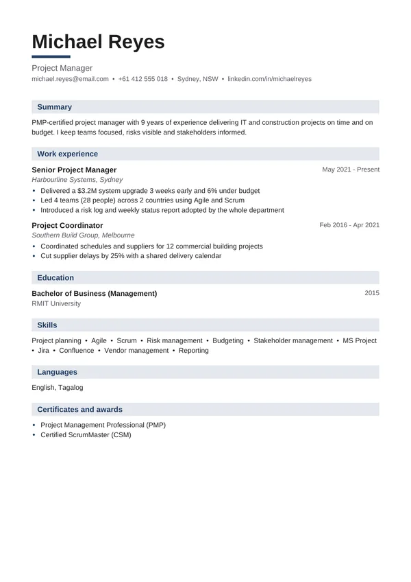

Project Manager resume example

Project managers are judged on delivery: on time, on budget, with happy stakeholders. This project manager resume example shows the size of projects and teams, the methods used and the results delivered.
Use this example — freeOpens in our resume builder with everything filled in. Change it to your own details, pick any of 25 designs and download a PDF.
Free No watermark No sign-up PDF download
Why this project manager resume works
- Project size and budget ($3.2M) are clear.
- Delivery results: 3 weeks early and 6% under budget.
- Methods (Agile, Scrum) and tools (Jira, MS Project) are named.
- PMP and CSM certifications stand out.
Project Manager resume summary examples
Your summary is the first thing people read. Keep it to 2–3 lines: who you are, your experience, and what you are best at.
PMP-certified project manager with 9 years of experience delivering IT and construction projects on time and on budget. I keep teams focused, risks visible and stakeholders informed.
IT project manager with 6 years of experience delivering software rollouts for hospitals, from planning to go-live and training.
Construction project manager with 10 years of experience leading residential projects worth up to $20M, with a strong safety record.
Skills to put on a project manager resume
Add the ones you really have — and use the same words as the job advert.
- Project planning
- Agile & Scrum
- Waterfall
- Risk management
- Budget control
- Stakeholder management
- Jira / Asana
- MS Project
- Resource planning
- Vendor management
- Status reporting
- Change management
Project Manager resume bullet points
Start with an action word and add a number to show the result. Copy these ideas and change them to match your own work:
- Delivered a $3.2M system upgrade 3 weeks early and 6% under budget
- Led 4 teams (28 people) across 2 countries using Agile and Scrum
- Introduced a risk log and weekly status report adopted by the whole department
- Coordinated schedules and suppliers for 12 commercial building projects
- Delivered 15 projects in 3 years, all within 5% of budget
- Recovered a delayed project and brought it back on schedule in 2 months
- Managed a team of 12 developers and 3 vendors
- Reduced project reporting time by 50% with Jira dashboards
- Led change management and training for 800 users
Tips for your project manager resume
- Give project size: budget, team size, number of users or sites.
- Show delivery against plan: time, budget, quality.
- Put PMP, PRINCE2 or Scrum certifications near the top.
Applying for a specific job? In the builder, paste the job advert into the Job match checker. It shows which skills from the advert are missing from your resume.